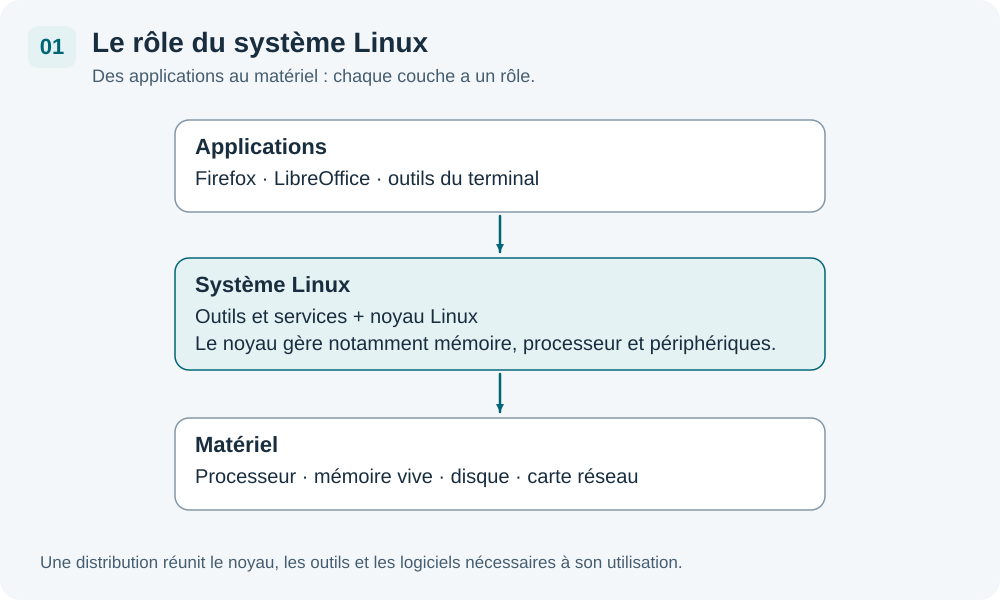
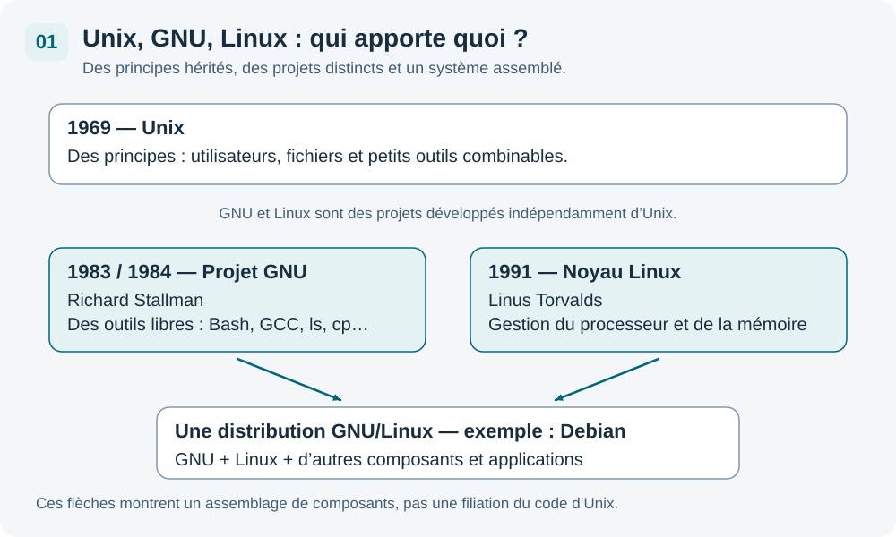

Vous utilisez peut-être déjà Linux sans le savoir : un téléphone Android, une box Internet ou un serveur qui héberge un site peuvent s’appuyer sur son noyau. Avant d’installer Debian, découvrons ce que recouvrent Linux, GNU, logiciel libre et distribution.
1. Qu’est-ce qu’un système d’exploitation ?
Un système d’exploitation, souvent abrégé OS (Operating System), fait fonctionner l’ordinateur et permet aux applications d’utiliser son matériel.
Quand vous ouvrez un document, le traitement de texte demande au système de lire le fichier sur le disque. Si vous lancez plusieurs applications, le système répartit entre elles le temps du processeur et la mémoire disponible. Il gère aussi les périphériques et les droits d’accès aux fichiers.

Les applications s’appuient sur le système pour utiliser le matériel.
Vous connaissez probablement Windows, macOS, Android ou iOS. Sur un ordinateur, Debian et Ubuntu sont deux exemples de systèmes construits autour du noyau Linux.
Le noyau (kernel) est la partie centrale du système : il gère notamment le processeur, la mémoire et l’accès aux périphériques. Le navigateur, le bureau graphique et les commandes du terminal sont d’autres logiciels, qui s’appuient sur lui.
2. D’Unix à GNU/Linux : trois repères
Unix : les idées de départ
Unix apparaît en 1969 aux laboratoires Bell, notamment avec Ken Thompson et Dennis Ritchie. Il permet à plusieurs personnes d’utiliser un même ordinateur et d’y exécuter plusieurs programmes. Histoire d’Unix — The Open Group
Unix a popularisé une organisation que vous retrouverez sous Linux : des utilisateurs avec des droits distincts, des fichiers rangés dans une arborescence et de petits outils que l’on peut combiner.
Linux est un système de type Unix : il reprend de nombreux principes d’Unix, mais son noyau a été développé indépendamment. Linux n’est donc pas simplement « une version gratuite d’Unix ».
GNU : Richard Stallman et le logiciel libre
En 1983, Richard Stallman annonce le projet GNU, dont le développement commence en 1984. Son objectif est de construire un système compatible avec Unix qui respecte la liberté de ses utilisateurs. Le nom signifie GNU’s Not Unix, soit « GNU n’est pas Unix ». Annonce du projet GNU
Le projet fournit progressivement des outils essentiels : Bash pour interpréter les commandes, GCC pour transformer du code source en programmes et les outils GNU comme ls ou cp. Vous utiliserez certains de ces outils dans les prochains chapitres.
Richard Stallman fonde également la Free Software Foundation (FSF) en 1985, pour soutenir le logiciel libre. GNU développe de nombreux composants, mais son propre noyau n’est pas encore prêt pour constituer le système recherché. Repères historiques — FSF
Linux : le noyau de Linus Torvalds
En 1991, Linus Torvalds, alors étudiant finlandais, lance le noyau Linux. Des développeurs rejoignent ensuite le projet. Associé aux outils GNU et à d’autres logiciels, ce noyau permet de construire des systèmes complets.
L’expression GNU/Linux rappelle cette association. Dans la conversation courante, on dit souvent simplement « Linux » pour parler de l’ensemble. Debian est une distribution GNU/Linux. Tous les systèmes qui utilisent le noyau Linux n’utilisent cependant pas l’environnement GNU : Android en est un exemple. Présentation du système GNU

3. Logiciel libre, open source et gratuit : quelle différence ?
Le code source est l’ensemble des instructions écrites par les développeurs pour construire un logiciel. Vous pouvez utiliser un logiciel sans savoir lire son code, comme vous pouvez utiliser une voiture sans être mécanicien.
Les quatre libertés du logiciel libre
Un logiciel libre donne à ses utilisateurs quatre libertés, traditionnellement numérotées de 0 à 3 :
| Liberté | Ce que cela permet concrètement |
|---|---|
| 0 — Utiliser | Exécuter le programme pour l’usage de son choix, personnel ou professionnel. |
| 1 — Étudier et modifier | Comprendre son fonctionnement et l’adapter à ses besoins, grâce au code source. |
| 2 — Partager des copies | Donner une copie du logiciel à un collègue ou à un proche. |
| 3 — Partager ses modifications | Redistribuer une version améliorée pour que d’autres en profitent. |
Ces libertés portent sur les droits accordés, pas sur le prix du logiciel. Définition du logiciel libre — GNU/FSF
L’open source : le code et les droits qui l’accompagnent
Un logiciel open source fournit l’accès à son code source avec une licence autorisant notamment son utilisation, sa modification et sa redistribution. Un code visible sur Internet, accompagné d’une interdiction de le modifier, ne suffit donc pas.
Les expressions logiciel libre et open source recouvrent largement les mêmes logiciels. La première met l’accent sur les libertés des utilisateurs ; la seconde sur l’ouverture du code et le développement collaboratif. L’Open Source Initiative (OSI) définit les critères d’une licence open source. Définition de l’open source — OSI
Gratuit ne veut pas dire libre
Un logiciel peut être gratuit et propriétaire : vous ne payez rien, mais vous n’avez pas nécessairement accès au code ni le droit de le modifier. À l’inverse, un logiciel libre peut être vendu, et des entreprises peuvent facturer son installation, son hébergement ou son assistance.
La transparence facilite l’étude du logiciel et permet à d’autres de poursuivre son développement. Elle ne garantit toutefois ni l’absence de failles, ni des mises à jour éternelles. La maintenance et la bonne configuration restent nécessaires.
4. Les licences libres : les règles du partage
Une licence logicielle est un texte qui précise les droits et les conditions d’utilisation, de modification et de redistribution d’un programme. Les auteurs conservent leurs droits d’auteur : publier un logiciel libre ne signifie pas abandonner tous leurs droits.
Vous n’avez pas besoin d’apprendre ces textes par cœur. Pour débuter, retenez surtout deux grandes approches.
Le copyleft : conserver les libertés lors du partage
La GNU GPL (General Public License) est une licence à copyleft. Lorsqu’une version modifiée d’un programme couvert par la GPL est distribuée, les destinataires doivent conserver les droits prévus par cette licence et pouvoir obtenir le code source correspondant selon ses conditions.
Exemple : une entreprise adapte un outil sous GPL et distribue cette version à ses clients. Elle doit respecter la GPL pour cette version et leur permettre d’obtenir son code source. Elle ne peut pas retirer les libertés que la licence leur accorde.
Le noyau Linux est sous GPL version 2. Les autres logiciels d’une distribution ont leurs propres licences : Debian n’est pas un unique programme placé sous une unique licence. Licence du noyau Linux
Les licences permissives : autoriser davantage de réutilisations
Les licences MIT, BSD et Apache 2.0 autorisent une réutilisation large du code, y compris dans des logiciels propriétaires, sous réserve de respecter leurs conditions. Elles imposent notamment de conserver certains avis de licence et de droits d’auteur. Apache 2.0 comprend aussi des dispositions explicites sur les brevets.
| Approche | Exemples | Idée principale |
|---|---|---|
| Copyleft | GNU GPL | Préserver les libertés sur le programme couvert et ses versions dérivées distribuées. |
| Permissive | MIT, BSD, Apache 2.0 | Faciliter les réutilisations, sans imposer que toute version dérivée reste libre. |
Exemple : une entreprise peut intégrer un composant sous MIT dans une application propriétaire en respectant la licence, notamment les mentions à conserver. Les utilisateurs de l’application complète ne reçoivent pas forcément le code de cette application. Licence MIT — OSI, licence Apache 2.0
5. Une distribution : le système prêt à utiliser
Une distribution Linux assemble un noyau Linux, des outils système, des bibliothèques nécessaires aux programmes, un gestionnaire de paquets et des applications. Elle peut aussi proposer un bureau graphique.
Pour Debian, on peut se représenter cet assemblage ainsi :
Noyau Linux + outils GNU + autres composants et applications
↓
Distribution Debian
L’équipe d’une distribution choisit les composants, prépare leur installation et fournit des mises à jour. Vous n’avez pas à assembler chaque pièce vous-même.
| Famille ou projet | Exemples | Repère pour la formation |
|---|---|---|
| Debian | Debian, Ubuntu, Linux Mint | Ubuntu s’appuie sur Debian ; l’édition principale de Mint s’appuie sur Ubuntu. |
| Red Hat | Fedora, RHEL, Rocky Linux, AlmaLinux | Un autre écosystème, fréquent dans les environnements professionnels. |
| SUSE | openSUSE, SUSE Linux Enterprise | Un écosystème disposant de ses propres outils d’administration. |
| Autres projets | Arch Linux, Kali Linux | Des choix ou usages particuliers ; Kali, basée sur Debian, vise notamment les tests de sécurité. |
Une distribution peut contenir des composants sous différentes licences, et éventuellement des éléments propriétaires, comme certains micrologiciels nécessaires au matériel. Utiliser Linux ne signifie donc pas que chaque composant installé est libre.
6. Bureau ou serveur : deux usages du même système
Un poste de travail sert directement à une personne : naviguer sur le Web, écrire des documents ou consulter ses fichiers. Un serveur fournit des services à d’autres machines, par exemple des pages Web ou un espace de partage.
| Interface | Comment l’utiliser ? | Exemple |
|---|---|---|
| Bureau graphique | Fenêtres, icônes, menus et souris. | Ouvrir le gestionnaire de fichiers et créer un dossier. |
| Terminal | Saisir des commandes au clavier. | Demander l’affichage du contenu d’un dossier. |
Ces interfaces accèdent au même système et aux mêmes fichiers. Vous pouvez ouvrir un terminal dans un bureau graphique ; il n’est pas nécessaire de choisir définitivement entre les deux.
Un serveur peut fonctionner sans bureau pour économiser des ressources et limiter les logiciels à maintenir. Dans cette formation, nous commencerons avec une interface graphique, puis nous découvrirons progressivement le terminal.
7. Vidéo et échange
Regardez la vidéo proposée, puis utilisez le cours pour répondre aux questions ci-dessous. Sa lecture nécessite une connexion Internet.
- Qui a lancé GNU ? Qui a créé le noyau Linux ?
- Un logiciel gratuit est-il forcément libre ? Expliquez avec les droits de l’utilisateur.
- Quelle différence principale retenez-vous entre une licence GPL et une licence MIT ?
- Pourquoi Debian est-elle une distribution plutôt qu’un simple noyau ?
Afficher les pistes de réponse
1. Richard Stallman a lancé GNU ; Linus Torvalds a créé le noyau Linux.
2. Non. Le prix ne dit pas si l’on peut étudier, modifier et redistribuer le programme.
3. La GPL préserve les libertés sur les versions dérivées distribuées du programme couvert. MIT permet aussi des réutilisations propriétaires, à condition de respecter ses mentions et conditions.
4. Debian assemble le noyau avec des outils, des applications et un système de gestion et de mise à jour des logiciels.
À retenir
| Mot | L’idée essentielle |
|---|---|
| Unix | Un système historique dont Linux reprend de nombreux principes. |
| GNU | Le projet libre lancé par Richard Stallman, à l’origine de nombreux outils système. |
| Linux | Le noyau lancé par Linus Torvalds en 1991. |
| GNU/Linux | L’association du noyau Linux et de l’environnement GNU, avec d’autres composants. |
| Libre / open source | Des droits sur l’utilisation, le code, les modifications et le partage ; pas une promesse de gratuité. |
| Licence | Le texte qui fixe ces droits et leurs conditions : GPL, MIT, BSD, Apache… |
| Distribution | Un ensemble prêt à installer, comme Debian ou Ubuntu. |
Vous pouvez maintenant faire le quiz de 20 questions, puis passer au chapitre 02 — Installer la VM.